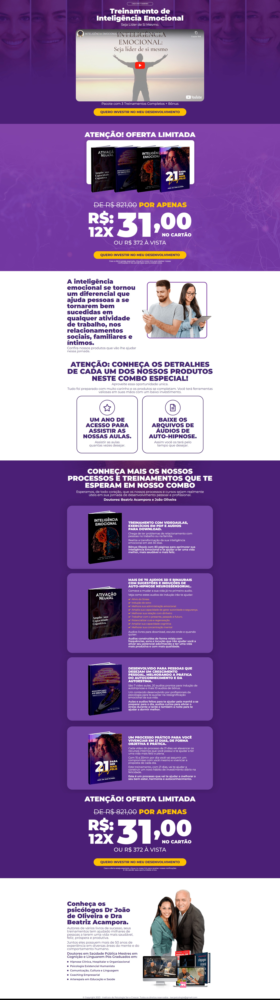
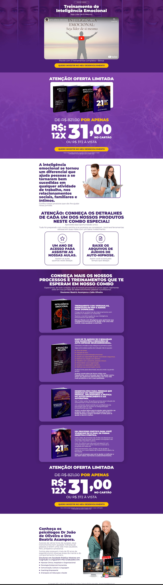
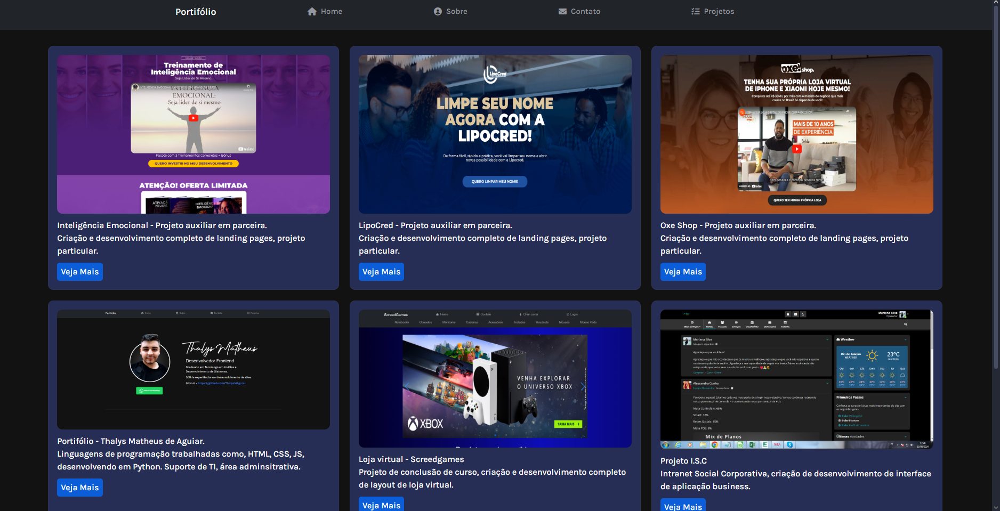
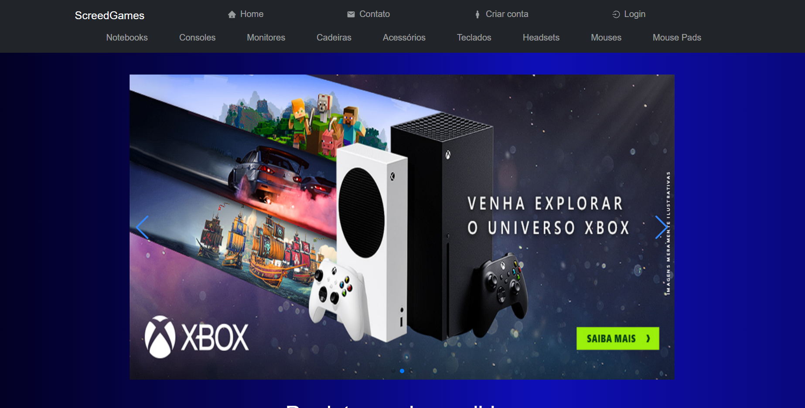
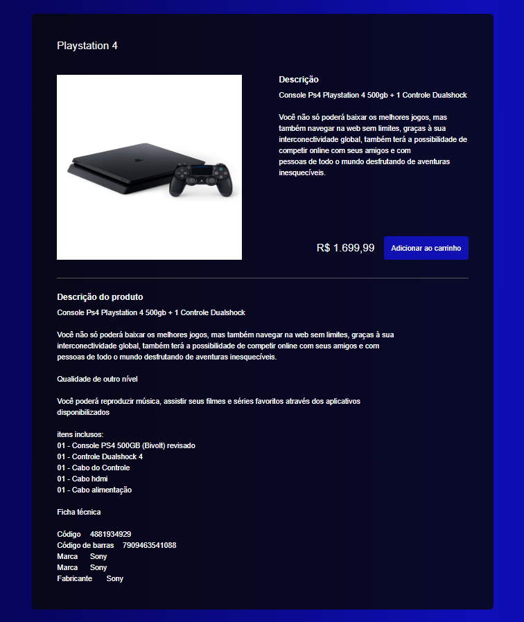
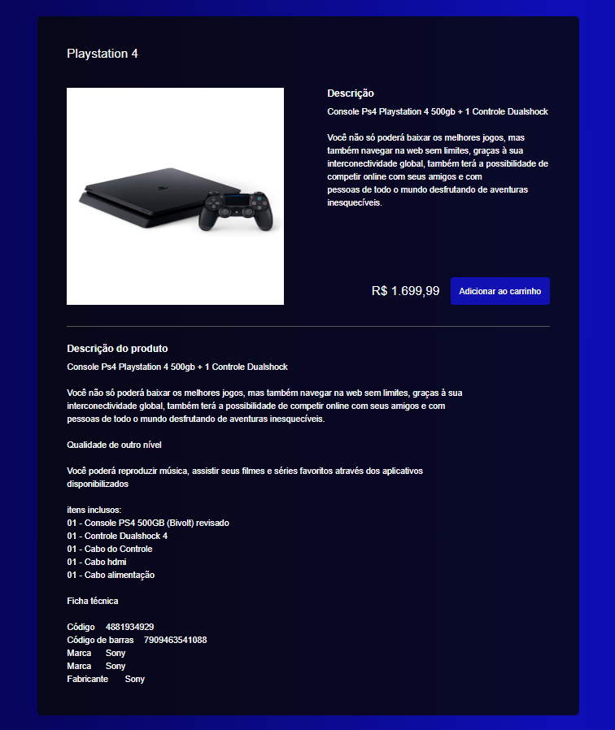
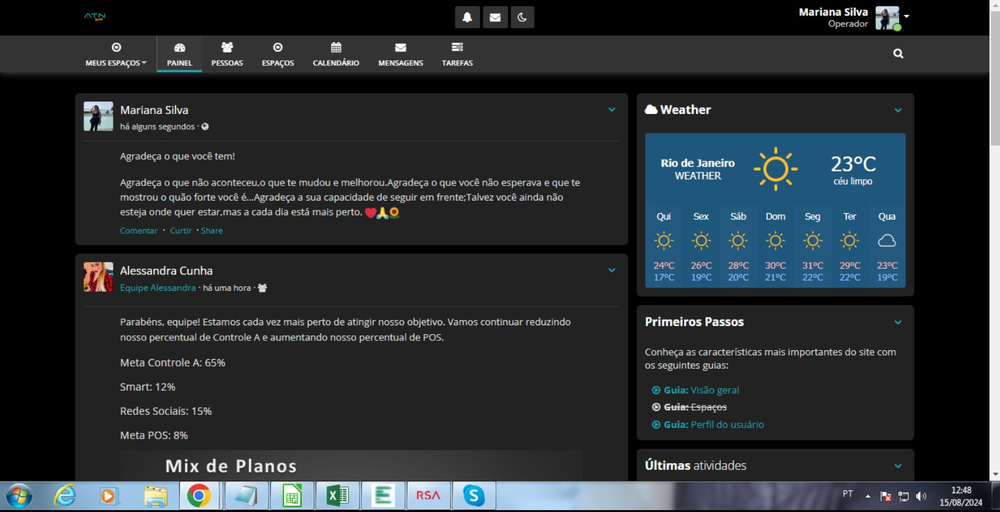
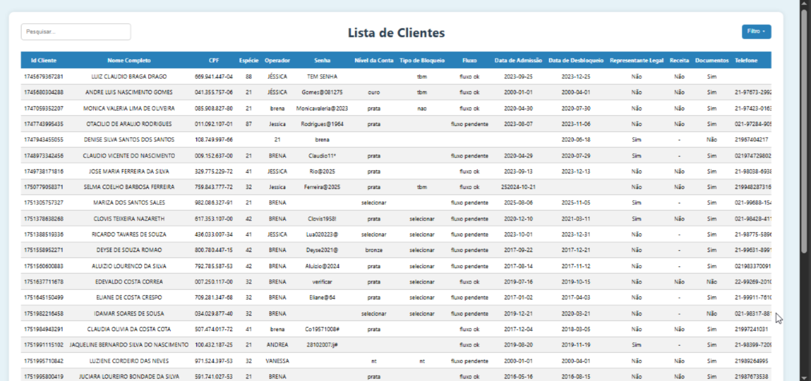
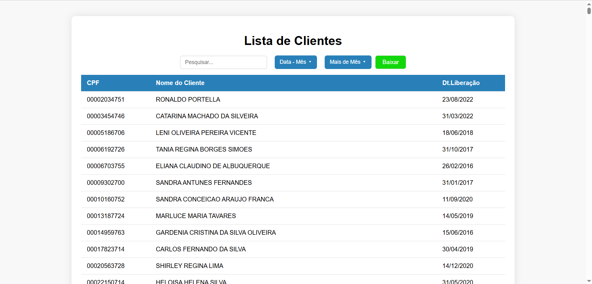

Sobre Mim
Me chamo Thalys, tenho 24 anos, e sou apaixonado por aprender, seja dentro ou fora da área da tecnologia. Me formei em programação e comecei minha jornada profissional atuando com T.I, passando depois para o suporte administrativo, onde desempenhei funções como BKO, recepcionista e novamente T.I.
Apesar de ter poucos anos de experiência formal, já vivenciei diferentes áreas que me permitiram crescer, desenvolver múltiplas habilidades e entender o valor da colaboração no ambiente de trabalho. Tenho um perfil proativo, gosto de entender como as coisas funcionam e sempre busco formas mais eficientes de executar tarefas e otimizar processos.
Sou pontual, comprometido com prazos e acredito que ser prestativo faz toda a diferença no dia a dia corporativo. Gosto de aprender novos sistemas, metodologias e formas de trabalho.
No meu tempo livre, curto jogar com os amigos, narrar e participar de RPG de mesa, assistir filmes e séries, assistir a jogos de futebol, e aproveitar o tempo com minha esposa. Meus fins de semana são divididos entre visitar minha família, maratonar alguma série debaixo das cobertas ou sair pra comer e curtir um cinema.
Projetos
Desenvolvimento de land page
Projeto auxiliar em parceria.
Criação e desenvolvimento completo de landing pages, projeto particular.
Desenvolvimento de Landing Page
 


Projeto auxiliar em parceria.
Criação e desenvolvimento completo de landing pages, projeto particular.
Portifólio Online - Modelo 1

Projeto criado para apresentar ao cliente suas qualificações, cursos concluídos e projetos realizados.
Portifólio Online

Ter um portfólio online é essencial para apresentar de forma profissional seus projetos, habilidades e serviços prestados. Ele facilita a confiança de clientes e parceiros, mostra sua evolução e deixa tudo acessível com apenas um clique.
ScreedGames – E-commerce de Tecnologia (TCC)
Criação e desenvolvimento de layout para e-commerce, como projeto final de curso.
Loja online - Screedgames
 

O ScreedGames foi o meu Trabalho de Conclusão de Curso (TCC), com o objetivo de desenvolver um e-commerce completo e funcional, voltado para a venda de produtos relacionados ao universo gamer e tecnológico (periféricos, acessórios, consoles, etc). O nome ScreedGames surgiu da junção entre Assassin’s Creed — jogo marcante na minha infância — e Games, representando a proposta do site.
O TCC foi dividido em duas etapas principais:
Etapa 1 – Documentação Técnica
Antes de qualquer linha de código, elaborei uma documentação completa com mais de 50 páginas, contendo:
Diagrama de classes para definir a estrutura das entidades do sistema;
Diagrama de casos de uso para mapear todas as interações possíveis com a plataforma;
Fluxograma de navegação entre páginas;
Requisitos funcionais e não funcionais;
Mockups de interface e estrutura de telas;
Descrição da arquitetura de software utilizada (cliente-servidor, banco de dados relacional, etc.)
Esse material foi avaliado e aprovado pelo conselho da faculdade, permitindo o início da fase de desenvolvimento.
Etapa 2 – Desenvolvimento do E-commerce
A aplicação foi desenvolvida com foco em usabilidade, segurança e experiência real de uso, incluindo funcionalidades tanto para clientes quanto para administradores/funcionários. Abaixo, uma descrição mais aprofundada de cada uma:
Carrossel de Destaques
Logo na página inicial, o usuário visualiza um carrossel com os produtos mais populares, baseado nos acessos e nas vendas registradas no banco de dados.
Seção de Mais Vendidos
Um espaço exclusivo apresenta os produtos mais vendidos, atualizados dinamicamente conforme o histórico de vendas.
Navegação por Categorias
O cliente pode navegar de forma intuitiva por categorias específicas (teclados, mouses, monitores, headsets etc.), facilitando a experiência de compra.
Criação de Conta
Sistema completo de cadastro de cliente, com login e autenticação segura. Caso o cliente esqueça a senha, há uma opção de recuperação via e-mail, garantindo autonomia e segurança.
Área “Minha Conta”
Visualização de pedidos anteriores
Acompanhamento do status em tempo real (aguardando pagamento, pagamento confirmado, preparando envio, enviado)
Edição dos dados pessoais, com verificação via código enviado por e-mail para evitar alterações não autorizadas
Cadastro e Gestão de Produtos
Cadastro de novos produtos, com imagem, descrição, preço e quantidade em estoque
Edição e remoção de produtos com controle total sobre o inventário
Controle de Estoque Automatizado
Quando o estoque de um produto chega a zero, o item é automaticamente ocultado da loja para os clientes
Um alerta visual é exibido para o administrador, sinalizando que o item precisa ser reabastecido
Painel de Vendas com Relatórios
Área administrativa com relatórios detalhados de vendas, incluindo:
Produtos mais vendidos
Receita total
Filtros por período
Gráficos interativos para análise visual do desempenho da loja
Acompanhamento do Ciclo de Venda
Cada pedido passa por uma linha de produção virtual:
Aguardando pagamento
Pagamento confirmado
Produto em embalagem
Produto enviado
Esse controle permite que o administrador saiba exatamente em que etapa cada pedido está, garantindo organização logística.
Funcionários/Admins acessam áreas administrativas restritas por meio de login com credenciais próprias
Resultado Final
O ScreedGames entrega uma experiência de navegação fluida, com funcionalidades reais de um e-commerce moderno. A estrutura completa do projeto me proporcionou uma vivência prática de todo o ciclo de desenvolvimento de software — da análise e documentação até a entrega de um sistema funcional, escalável e voltado para o usuário final.
Projeto I.S.C
Intranet Social Corporativa, criação de desenvolvimento de interface de aplicação business.
Projeto Unifica
Este projeto surgiu para resolver um problema recorrente de uso simultâneo e perda de informações em uma planilha compartilhada de clientes bloqueados.
Projeto Reativa
O principal objetivo deste projeto foi identificar e reativar clientes com alto potencial dentro da nossa base de dados, visando aumentar a produtividade e conversão em operações de crédito.
Tecnologias utilizadas
HTML
CSS
JavaScript
Python
Firebase
VS Code
WordPress
Elementor

Copyright

SEO
Serviços
Suporte Técnico
Atendimento a usuários, conserto, monstagem e limpeza de computadores.
Desenvolvimento de aplicações.
Desenvolvimento de aplicações com foco em automação de processos, gerenciamento de negócios, estoque de produtos, entre outros.
Desenvolvimento Web
Desenvolvimento de sites e plataformas utilizando linguagens de programação.